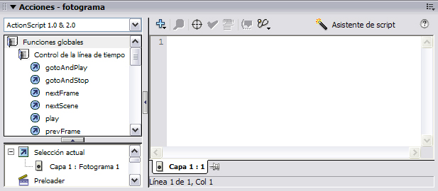

El ActionScript es el lenguaje de programación que ha utilizado Macromedia Flash desde sus comienzos, y que por supuesto, emplea Flash 8. A grandes rasgos, podemos decir que el ActionScript nos permitirá realizar con Flash 8 todo lo que nos propongamos, ya que nos da el control absoluto de todo lo que rodea a una película Flash. Absolutamente de todo.
El ActionScript es un lenguaje de programación orientado a objetos, tiene similitudes, por tanto, con lenguajes tales como los usados en el Microsoft Visual Basic, en el Borland Delphi etc... y aunque, evidentemente, no tiene la potencia de un lenguaje puramente orientado a objetos derivado del C o del Pascal como los anteriores, cada versión se acerca más a un lenguaje de este tipo. Así, la versión 2.0 estrenada en Flash MX 2004 es mucho más potente y mucho más "orientada a objetos" que su anterior versión 1.0
En Flash 8, el Panel Acciones sirve para programar scripts con ActionScript. Esto es, que todo lo que introzcamos en dicho Panel se verá reflejado después en nuestra película. Debemos tener claro desde un principio que el Panel Acciones puede hacer referencia a Fotogramas u objetos, de modo que el código ActionScript introducido afectará tan sólo a aquello a lo que referencia el Panel.
El Panel Acciones se divide en 2 partes, a la izquierda tenemos una ayuda facilitada por Flash que nos da acceso de un modo rápido y muy cómodo a todas las acciones, objetos, propiedades etc... que Flash tiene predefinidos. Estos elementos están divididos en carpetas, que contienen a su vez más carpetas clasificando de un modo eficaz todo lo que Flash pone a nuestra disposición. Para insertarlos en nuestro script bastará con un doble clic sobre el elemento elegido.

Conceptos basicos
En resumen, ActionScript es un lenguaje con el que manipular los objetos de una pelicula flash.
Ahora vamos a ver los conceptos más basicos de este programa:
 Script: Código escrito en cualquier lenguaje de programación que realiza una tarea determinada. Así por ejemplo, el código ActionScript necesario para que al pulsar un botón de Flash pasemos al fotograma siguiente es un script.
Script: Código escrito en cualquier lenguaje de programación que realiza una tarea determinada. Así por ejemplo, el código ActionScript necesario para que al pulsar un botón de Flash pasemos al fotograma siguiente es un script.
Variable:Las variables son contenedores de información, y dicha información puede ser cualquiera, desde un numero, texto o hasta un valor booleano. Ejemplo:
Si tenemos la expresión: numero = 3;
Tenemos que numero es una variable que toma el valor 3. Se llama variable precisamente porque puede cambiar de valor en cualquier momento durante la ejecución de nuestra película Flash. Todos los datos que se manejan normalmente son variables.
Expresión / Sentencia: Conjunto de operadores, constantes, variables o acciones. Provocan un resultado o una acción determinada y SIEMPRE deben ir terminados por ' ; ' (punto y coma).
Función:Una función es una porción de código (ActionScript en nuestro caso) que tiene un nombre determinado y que realiza una labor concreta. Ejemplo, la siguiente definición de función:
function IncrementaX(x) {
x = x + 1;
}
Realiza la función de tomar la variable "x" y sumarle uno a su valor.
Accion: Flash llama Acción a funciones que él mismo ha implementado y que no requieren ser definidas para ser usadas. Basta por tanto, con escribir la llamada a la función. Estas acciones son lo que usaremos la mayoría de las veces, pues resultan sumamente fáciles de usar y muy potentes.
Por ejemplo "gotoAndPlay(3)" es una acción que provoca que Flash pase a ejecutar el fotograma 3.
Ahora que entendemos qué son las funciones, deberemos comprender también, que en alguna parte, Flash ha definido la función "gotoAndPlay" (tal y como hemos hecho nosotros anteriormente con la función "IncrementaX") y ha escrito un código que provoca el efecto ya comentado. Por suerte todo esto no nos debe preocupar, Flash 8 se encarga de todo. Nos basta con conocer las acciones y saber cómo usarlas.
Parametro: Un parámetro es una variable que entra o sale de una acción o de una función. Ponemos un ejemplo para clarificar esta definición:
Tenemos la siguiente definición de función:
function Suma5(p_entrada, p_salida)
{
p_salida = p_entrada + 5;
}